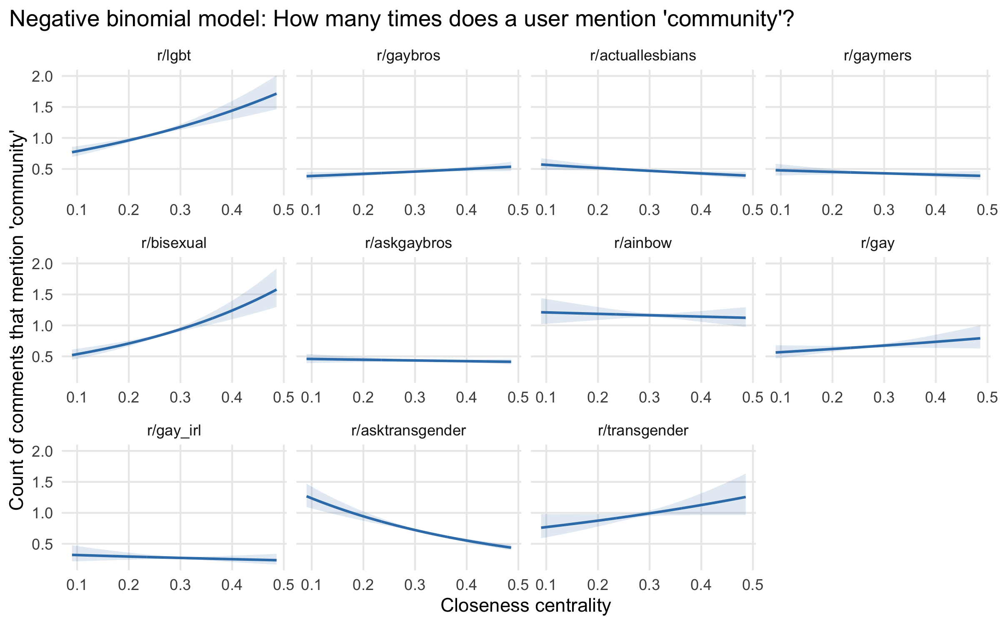
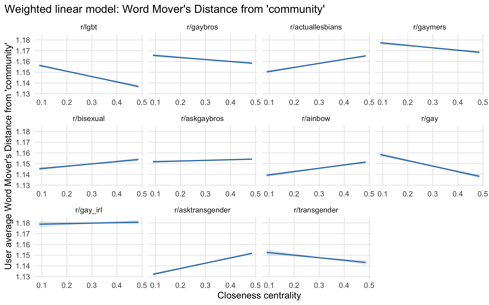

4 Community in interaction
The embeddedness of actors engaged in community talk
4.1 Introduction
“Community” is something that people do – they build community, they create it. This chapter aims to study how the process of creating and invoking community plays out in the social interactions that constitute group social networks. A “social density” (Durkheim [1893] 1997; Tavory 2016) of interactions and relations, not mere physical proximity, produces the social reality and the individual subjective experience of community, as well as observable expressions of community. These expressions of community, in turn, help create the conditions for group-based social life. In this chapter, I use a set of virtual communities, LGBTQ-centered groups on the social platform Reddit, as a site to study the relation between social density and expressions of community.
In the previous two chapters, I first showed that when people talk about community, they often mean something analogous to the sociological concept of Gemeinschaft, of a feeling of “we”-ness and belonging, and that this is especially true in LGBTQ virtual communities, where that sense of Gemeinschaft again intersects with identity. I then investigated the conditions under which LGBQ people experience a sense of community in relation to their identity group, finding that they do so in dense, abundant contexts. All of this provides evidence of the reality and salience of this sociological phenomenon called “community” for LGBTQ people. In this chapter, I combine the tools and insights from the previous two chapters, pairing text analysis methods with an attention to structural context, using LGBTQ virtual communities to ask who produces community talk. Members of virtual communities have all chosen to seek community out, to some degree, and they contribute to creating a community together by participating in group conversations. When they talk about community, they actively take part in constructing its meaning and bringing it into being.
This chapter asks who contributes to the construction of community through conversation, in terms of their individual embeddedness in the group. As with my previous examination of place characteristics, a primary question is whether pro-community factors reinforce each other, or whether community becomes ambient and backgrounded once an individual has the structural conditions necessary to experience it. In this chapter, the question is whether community talk is most prevalent among those who are most embedded or central in a group, perhaps performatively creating community for downstream and peripheral group members; or, is it the peripheral members of a group that engage in the most community talk in an effort to create their own sense of belonging? Those are two distinct possibilities for the sources of expressions of community. Ultimately, the evidence I find is mixed, with some group contexts eliciting community talk most often from the most central group members.
4.2 Background
Social networks are an essential aspect of community. Indeed, the “community liberated” answer to the “community question” – how does the nature of community change in modern society? – argues that social networks of spatially-dispersed intimate ties have now become the main basis for community (Wellman 1979), including specifically for gay men (Kelly et al. 2014). What is important, however, is not merely having intimate ties or lacking them; an individual’s structural embeddedness within a group matters as well. Drawing on Durkheim ([1893] 1997), Tavory (2016) characterizes the webs of ties and associations that lay a foundation for communal life through the metaphor of “social density.” Embeddedness in a dense web of relations is necessary, Tavory argues, to produce a sense of community.
But even structural embeddedness is not sufficient on its own to create community. Instead, the experience of community emerges as the meanings of ties are collectively negotiated through conversation-based interaction. This produces what Tavory (2016) calls “moral density,” which is the element that transforms a social entity from a social network or social group into Gemeinschaft. Because this transformation occurs through interactions, networks of interactions – especially networks of conversations – are crucial for creating communities. These interactions are what coalesce into and constitute durable, longstanding ties, through an emergent process of cultural perception (White [1965] 2008).
As a form of interaction, a conversation has two elements: not only who an individual is interacting with, but also what they are saying. In the process of talking to each other, members of a group create a collective discursive style (Eliasoph and Lichterman 2003) and develop a distinctive shared language (Lucy and Bamman 2021). This offers an opportunity to connect linguistic or textual expressions of community, like those I explored in the first empirical chapter, to structural embeddedness in conversation networks. Contemporary virtual communities are an ideal site for analyzing this connection, because they both produce informal written language (McCulloch 2019) and provide records of interactions.1
“Community talk” – expressions of community encompassing both explicit invocations of the idea of community as well as implicit statements that resonate with the underlying concept of Gemeinschaft – does two things. First, it is expressive; it reflects a speaker’s inner sense of community. While what comes out of people’s mouths (or keyboards) is not identical to their internal subjective experiences, the former can proxy the latter (Bestvater and Monroe 2023).Second, community talk is relational and potentially performative. That is, it is part of the process of creating community for a speaker or an audience. For example, suppose that two members of a group chat are debating the efficacy of vaccines, in an increasingly contentious and politicized way. A third member steps in to intervene, stating that we, as a community, have a range of opinions on many things, but we all belong together. Both contending parties moderate their debate going forward. Invoking community here is an act of repair, and achieves its intended proximate effect of reducing conflict – but for all parties involved, and for any bystanders, it simultaneously strengthens the very community being invoked. Because community talk is both expressive and performative, it might come primarily from the most central members of a group, reflecting their embeddedness. Or else it might come mainly from the most peripheral, if central members have no need to express a feeling they take for granted, and if peripheral members conversely feel the greatest need to express and create a sense of community.
Because community talk can take explicit and implicit forms, there are two options for constructing linguistic measures of it: surface-level keywords and latent embeddings (Stoltz and Taylor 2021).2 Keywords are straightforward and easy to understand: search a corpus for uses of the literal word “community,” or perhaps an expanded lexicon or dictionary of words related to community and belonging. Their weaknesses are equally obvious: false negatives, because this method misses any implicit references (e.g., what about when LGBTQ people talk about “chosen family” instead of community?). Conversely, false positives are possible because people can talk about community in disparaging or distancing ways (Winer 2020).
The second method uses word embeddings (Mikolov et al. 2013; Pennington, Socher, and Manning 2014) to solve one of shortcomings of using keywords alone to detect concepts. Because embeddings models encode relations between words (i.e., semantic similarity), the can uncover more implicit invocations of concepts like “community.” Word embeddings, however, are vectors of numbers representing individual words. To create a measure of similarity at the larger scale of the full text of a sentence, paragraph, document, or Reddit comment, an additional step of aggregation is required.
One such aggregated document-level measure is Word Mover’s Distance (WMD) (Kusner et al. 2015). WMD takes word vectors for all words in a pair of documents and minimizes the cost of moving all of the words in one document to the locations of the words in the second document in the multidimensional embedding space. Sociologists Stoltz and Taylor (2019) adapt Word Mover’s Distance as Concept Mover’s Distance (CMD), to measure the degree to which documents relate to social-science concepts.3 CMD replaces the second document in the comparison with a “pseudo-document” consisting only of the vector(s) for a focal concept. This, they claim, provides a “fuzzy” measure of the degree of “engagement” with a concept in a text (Stoltz and Taylor 2019); the smaller the distance value, the closer the text is to the concept. Their example applications trace concepts like “death” in Shakespeare and “introspection” in the Bible. One non-literary application they propose for future work even involves “community” directly; they propose investigating “whether hearing sermons which are close to the concept of community are associated with volunteering or voting” (Stoltz and Taylor 2019), measures of civic engagement that Putnam (2001) argues have declined in American society as it has become less communitarian. My analysis of how online group members’ text-based engagement with “community” is associated with their participation and embeddedness in their virtual communities, then, is a logical application for WMD (or CMD). However, I will show shortcomings with the WMD measure that lead me to give more evidential weight to the simple keyword-based measure.
My cases are a set of eleven contemporary LGBTQ-centric virtual communities on the social media platform Reddit. Different digital platforms have distinct structures and affordances, which shape the ways people stage social interactions and the kinds of communities they build. Reddit is a logical choice for studying community in particular, because the entire platform is structured around public groups (called subreddits). In other words, the key affordance of Reddit is the existence of groups in which to participate; these groups are the focal points for almost all interaction. Because it is topical and group-based, it is more similar to historical Usenet (Baym 1994; Dame-Griff 2019) than are platforms that emphasize durable friend and follower ties like Twitter or Instagram. Analyzing Reddit offers the opportunity bring the trends I observed on Usenet forward into the present. In one sense, the group-based structure of Reddit takes “groupness” for granted (Brubaker, Loveman, and Stamatov 2004). Everyone who participates to any degree could be said to be a “member” of a “community,” potentially draining those words of any deeper meaning. However, I do not presume the existence of real experiences of community in any subreddit; instead, I construct both structural and expressive measures of community for each member of each group.
An analytic advantage of Reddit’s group-based structure is that it offers observable variation. Subreddits vary immensely, in size and activity level, but also in moderation efforts, adherence to local rules and norms, and other signals of distinctive group styles and subcultures. Users vary as well, in their levels of participation, how specialized and selective they are in engagement across different groups, and how embedded they are in within-group conversations. Existing research leverages some of those variations. For instance, Zhang et al. (2017) characterize user engagement across a typology of community-level linguistic features; Lucy and Bamman (2021) use contextual word embeddings to study linguistic variation and conformity and identify semantically unique communities; and Waller and Anderson (2021) study polarization of subreddits through “community embeddings” based on co-membership. In the LGBTQ context, Reddit affords opportunities to observe community-oriented language across both large and generic (e.g. r/lgbt) and small and niche (e.g. r/LesbianGamers/) groups. Here, I ask how the embeddedness of an individual within a subreddit’s interaction network relates to explicit and implicit instances of community talk.
Reddit’s other key advantage is that it offers rich data from which to construct an interaction network. On both Usenet (Dame-Griff 2019) and many other virtual platforms (Foote, Shaw, and Hill 2023) it can be difficult to determine to whom exactly an individual is replying in a a conversation; by contrast, Reddit comments specify exactly whom they are addressing. On Reddit, interaction occurs in threads (i.e., conversations) of posts and comments within subreddits. Posts and comments can be rated and ranked through upvotes and downvotes, providing a crowdsourced measure of quality (Medvedev, Lambiotte, and Delvenne 2018). From these directed replies, the branching tree structure of a conversation can be constructed (Chang et al. 2020). Aggregating all conversations together produces the full interaction network of a subreddit. I can then observe which members are most centrally embedded in that network.
4.3 Data and methods
I examine the relation between interaction networks and comment text across 11 LGBTQ-centered online groups (“subreddits”) on Reddit. These subreddits come from an internal taxonomy of subreddits (r/ListOfSubreddits/), referenced in Lucy and Bamman (2021). They are likely to be the among the largest, most well-known, and most general LGBTQ-themed subreddits, although there are many more. There, the groups are categorized specifically under “Communities” alongside other recognizable groups (e.g., parents, teachers, vegans, people with beards), and as opposed categories like “Discussion” and “Entertainment,” suggesting that community-building will be an intentional focus in a way that is not necessarily true for all online groups. Notably, Reddit (the company and platform) itself also recognizes LGBTQ-themed groups as a paradigmatic case for on-platform community-building – their 2020 comments to the FCC in defense of volunteer moderation under Section 230 specifically choose to highlight and give voice to community moderators from r/lgbt.
I obtain Reddit data through ConvoKit (Chang et al. 2020), a Python-based toolkit for retrieving and analyzing conversation-based data sets which archives subreddits through 2018. The ConvoKit format is ideal for extracting conversational interactions and their metadata, making it easy to retrieve both textual data and the interaction network structure. I transform interaction pairs into a network and calculate network statistics using igraph (Csardi and Nepusz 2006), dropping deleted users and the AutoModerator (a bot).
Following Lucy and Bamman (2021), I use closeness centrality as my key measure of member embeddedness in the subreddit conversation networks. I choose centrality over other measures of participation like degree because structural embeddedness depends conceptually not only on the number of interactions an individual has, but also where those interactions position the individual within the overall network of the group. Lucy and Bamman (2021) use closeness centrality as such a structural measure of belonging, although they do not find it to be associated with use of ingroup language.4 Because I am interested in the contrast between core and peripheral group members, I depart from Lucy and Bamman (2021) and do not restrict the user networks to the 20% of users who are most active in a subreddit. Instead, I include all users within the largest connected component of each of the networks. (It is not possible to calculate centrality for disconnected individuals, and users outside the largest component are almost all singletons with minimal activity in their group.)
In order to link embeddedness in interaction networks to expressions of community and investigate whether central or peripheral actors engage in more community talk, I construct two measures of community talk from the text of the Reddit comments. The first is a simple keyword-based measure, indicating for each comment whether it explicitly references “community” (or “communities”) or not. I aggregate this indicator into a binary measure of whether a group member ever mentions community, and a count of how many times they do so. (Below, I will control for a user’s total number of comments. As an individual produces more comments, their probability of uttering any word naturally increases.)
The second measure is Word Mover’s Distance, a latent continuous measure of the implicit distance of every comment from the single word “community.” Having shown in the first empirical chapter that the GloVe word embedding (Pennington et al. 2014) for “community” has a reasonably close correspondence with the embedding for the concept in an LGBTQ virtual community, I use those pretrained GloVe embeddings for “community” and for all of the individual words in each comment. I calculate Word Mover’s Distance using the Python implementation in gensim (Řehůřek and Sojka 2010), which differs slightly from how Stoltz and Taylor (2019) implement Concept Mover’s Distance in R. To facilitate comparison between subreddits and against other concepts in robustness checks, as well as to investigate the methodological issues I discuss next, I do not standardize WMD values. Smaller WMD values indicate that a comment is closer to the concept of “community,” capturing implicit invocations of the concept that the keyword measure would miss. As both measures operationalize community talk, I would expect them to be largely consistent, although this turns out to not always be the case.
One important measurement issue makes it difficult to use Word Mover’s Distance from “community” as the sole outcome measure. When calculated at the comment level, Word Mover’s Distance exhibits a systematic variation in a way that appears to make it ill-suited for statistically modeling with other variables. Specifically, short texts, especially one- or two-word texts, exhibit very high variability; longer texts converge to roughly the average value overall. This makes theoretical sense when WMD is used to compare a variable-length document to a one-word concept, as Stoltz and Taylor (2019) do with their Concept Mover’s Distance adaptation of the measure: WMD measures the effort it would take to transform one text into another, normalized for document length; in this view, single words can be quite far apart. Longer texts are a sort of average of all the words they can contain; the longer the document, the closer it becomes to what might be an average distance from, perhaps, the corpus overall. Variation washes out. I suspect this issue has not been previously reported because prior work has compared texts of roughly similar sizes, e.g., sentences, speeches, or books (Stoltz and Taylor 2019), and has compared relatively few documents. Reddit comments are highly variable in length – many are only a few tokens long, while some stretch to thousands of words, and there are millions to compare. This makes the problem quite visible, as shown in Figure 4.1. A simple correction might be to use weighted least squares and weight longer comments more highly; more advanced approaches might incorporate and estimate that heteroskedasticity within the model itself. Still, this ignores something fundamental about the measure itself, with no obvious solution.
When I average WMD values across a user’s comments, a similar phenomenon occurs; users with more comments have converging average WMD values. In this case, I use weighted least squares weighted by the number of comments per user. (In modeling the explicit use of “community,” I control for the number of comments instead; I also explore controlling for average comment length in robustness check.) Moreover, the network measures are calculated at the user level, meaning that differences (especially for explicit mentions of community) are diminished at the comment level. Even for users who talk about community frequently, most of their comments will not include the word.
Accounting for all of these considerations, I fit and present user-level models below. In addition to using weighted least squares to model WMD by user closeness centrality and subreddit, I use logistic regression to model the probability that a user ever writes “community” in any comment and negative binomial regression to model the number of times a user writes comments with the word “community.” (Given that the majority of users do not write about community explicitly, a zero-inflated model would be theoretically justified, but model fit metrics do not support this additional complexity.) While initially I fit separate models for each subreddit, in the final results I present a pooled model with centrality by subreddit interaction terms. These interactions are generally warranted by measures of model fit. The inclusion of interaction terms previews one of my key substantive findings, that patterns and levels of engagement in community talk by network centrality vary substantially across subreddits.
4.4 Results
Table 4.1 reports descriptive statistics for the largest connected component of each subreddit’s network, and Table 4.2 reports descriptive statistics calculated on the text of the comments on each network. A large minority of users, typically those who post only once, are dropped when the ConvoKit data are subset to the connected users, but the vast majority of comments are retained. The few users with no tokenizable text are dropped from the second table and the models. Subreddits vary in activity levels, from 140,000 comments (r/gay_irl) to 2.7 million (r/askgaybros). From 6% to 24% of users mention “community” at least once, but only 1% - 3.5% of comments do.
| Subreddit | N. nodes | N. edges | Density | Mean closeness centrality |
|---|---|---|---|---|
| r/lgbt | 81,535 | 638,067 | 0.0001 | 0.22 |
| r/gaybros | 55,784 | 1,088,938 | 0.0003 | 0.28 |
| r/actuallesbians | 52,077 | 952,966 | 0.0004 | 0.28 |
| r/gaymers | 31,980 | 462,184 | 0.0005 | 0.27 |
| r/bisexual | 34,328 | 299,363 | 0.0003 | 0.24 |
| r/askgaybros | 63,404 | 1,573,925 | 0.0004 | 0.30 |
| r/ainbow | 25,330 | 297,793 | 0.0005 | 0.28 |
| r/gay | 23,823 | 182,482 | 0.0003 | 0.24 |
| r/gay_irl | 12,243 | 107,815 | 0.0007 | 0.26 |
| r/asktransgender | 58,175 | 1,384,561 | 0.0004 | 0.30 |
| r/transgender | 11,151 | 102,337 | 0.0008 | 0.26 |
| Subreddit | N. users | N. comments | Median comments per user | Mean comments per user | Pct. ‘community’, users | Pct. ‘community’, comments | Mean user WMD |
|---|---|---|---|---|---|---|---|
| r/lgbt | 81,436 | 1,047,003 | 4 | 12.9 | 0.19 | 0.035 | 1.15 |
| r/gaybros | 55,727 | 1,671,630 | 6 | 30.0 | 0.16 | 0.015 | 1.16 |
| r/actuallesbians | 52,037 | 1,492,782 | 7 | 28.7 | 0.18 | 0.015 | 1.16 |
| r/gaymers | 31,938 | 703,158 | 6 | 22.0 | 0.14 | 0.014 | 1.17 |
| r/bisexual | 34,286 | 467,598 | 5 | 13.6 | 0.18 | 0.030 | 1.15 |
| r/askgaybros | 63,366 | 2,777,469 | 7 | 43.8 | 0.17 | 0.013 | 1.15 |
| r/ainbow | 25,309 | 530,889 | 4 | 21.0 | 0.24 | 0.037 | 1.15 |
| r/gay | 23,792 | 305,432 | 5 | 12.8 | 0.15 | 0.023 | 1.15 |
| r/gay_irl | 12,189 | 140,147 | 3 | 11.5 | 0.06 | 0.012 | 1.18 |
| r/asktransgender | 58,160 | 2,430,525 | 7 | 41.8 | 0.23 | 0.019 | 1.14 |
| r/transgender | 11,144 | 173,941 | 4 | 15.6 | 0.21 | 0.034 | 1.15 |
In order to test whether more embedded or peripheral members of LGBTQ virtual communities engage in more community talk, I model the association between centrality in an interaction network and explicit and implicit measures of community talk. I first present model results for one large subreddit, r/gaybros, as an example, and then show the full range of 11 groups.
I select r/gaybros because it is a paradigmatic example for LGBTQ community-building on Reddit. It has more comments and more interaction network edges than the more general group r/lgbt, indicating that r/gaybros is more active in terms of participation even though r/lgbt has more users. Compared to r/gaybros, only the two “r/ask{X}” subreddits (r/askgaybros and r/asktransgender) are more active. These are intrinsically oriented toward question-answering and discussion rather than community-building per se, so I treat those as distinct rather than representative.
Ultimately, I find evidence that in r/gaybros more central members do engage in more community talk, both explicitly and implicitly. This suggests that community is foregrounded in terms of expression for those who are most structurally embedded in it. The r/lgbt subreddit shows similar trends, indicating that it too is an environment where community comes to the fore for central subreddit members. However, this is not true for all of the remaining nine. The two measures of community talk, explicit and implicit, are often consistent with each other within a subreddit – but not always; the inconsistencies suggest that they are imperfectly capturing the underlying concept of community-oriented expressions.
The models control for the number of comments per user, logged. In the context of the negative binomial model, this means that the outcome can be considered approximately as rates rather than counts. (Fixing the coefficient for log(number of comments) at 1 as an offset would be a true rate, but estimating the coefficient results in a better model fit.) This control is essential because a user’s closeness centrality and number of comments are highly correlated. As Figure 4.2 shows, there is still sufficient conditional variation to model. (However, bear in mind the constrained conditional range when viewing the model prediction figures below, which means that some predictions are beyond the scale observed in the actual data.) Other controls I considered, average comment length and membership duration, did not affect estimates of the closeness centrality coefficient, and so I exclude them here.

As is typical for online communities, the distribution of user activity is highly skewed, with a handful of users providing the bulk of interactions and many contributing only once. Accordingly, I illustrate predicted values by closeness centrality with the number of comments held at the median (6), mean (30), and 95th percentile (113) values for members of r/gaybros.
Figure 4.3 shows the results for the three models: one of implicit Word Mover’s Distance from “community,” and two predicting whether a user explicitly mentions community. At n = 30 comments, an increase in closeness centrality from 0.2 to 0.3 increases a user’s probability of ever mentioning “community” from 25% to 31%. At n = 113, a user is predicted to mention community 1.17 times at a closeness centrality of 0.2, and 1.52 times at a closeness centrality of 0.3. The average WMD of a user’s comments from “community” declines as the user’s centrality increases. Because WMD is a complex, abstract measure, the magnitude of the decrease is not as interpretable as the changes in the explicit measures, but it signals that implicit engagement with the concept of community also increases with member centrality. Overall, more central actors in r/gaybros are more involved in community talk.

Modeled at the comment level, results are much less interpretable. There is no association with closeness centrality in a logistic regression of explicit community mentions – which makes sense, given that users who mention community will also have comments where they do not. There appears to be a small positive association between closeness centrality and Word Mover’s Distance from community (\(\beta\) = 0.002), in a linear model weighted by comment length; this is an order of magnitude smaller than the user-level coefficient (\(\beta\) = -0.029), and so it is substantively unimportant. That the result is not consistent with the user-averaged finding suggests that weighting and aggregating may not have overcome the mathematical issues inherent in the funnel-shaped distribution of WMD values. Because these results are difficult to interpret, and because there are millions of comments across all of these subreddits, I do not pursue a pooled model at the comment level.
I next present results from combined models of all 11 subreddits, allowing coefficients and levels to vary by subreddit with interaction terms. Here I show predicted values by subreddit and closeness centrality with the number of comments fixed at 30, the mean for r/gaybros (which is, again, one of the most active subreddits). While users may actually overlap between subreddits, centralities and text measures are calculated on a per-group basis, meaning that observations are actually user by subreddit. Figure 4.4 shows predicted probabilities from a logistic regression of whether a user ever mentions “community” in a comment. Figure 4.5 shows predicted counts of the number of comments mentioning community that a user makes (again, effectively rates, given that a user’s total number of comments is controlled for). Finally, Figure 4.6 shows predicted WMD from “community” in a linear regression weighted by number of comments.



These results show considerable variation in levels and trends, rather than consistency:
- The r/lgbt subreddit aligns in direction with the previous results for r/gaybros, although it tends to have higher predicted values of community overall. This is consistent with the much higher proportion of comments explicitly mentioning community, 3.5% compared to 1.5%.
- r/ainbow, a splinter group formed from from r/lgbt with a looser moderation policy, does not show consistent trends, neither among the three outcomes nor with the other subreddits.
- The r/gaymers group aligns with r/lgbt and r/gaybros on the implicit community measure, but shows little association on the explicit measures.
- There is no consistent pattern among the groups for specific identities under the LGBT umbrella (r/actuallesbians, r/bisexual, r/gay, r/transgender). All except r/actuallesbians show increasing probabilities and rates of explicit community talk with increasing closeness centrality, but implicit community WMD values go in both directions.
- The two question-and-discussion groups, r/askgaybros and r/asktransgender, show inverted or no associations between community talk and closeness centrality.
- Finally, the subreddit with the fewest mentions of community and highest WMD, as well as the fewest tokenizable comments overall, is r/gay_irl, which shows a declining pattern of explicit mentions of community with closeness centrality. This subreddit is for memes, which may provoke different types of discussion and which also heavily incorporate images, a medium not accounted for by the text-centric methods I use.
All of these subreddits are virtual spaces for LGBTQ people, but they vary in their purposes – the identity groups they are intended for, the types of topics and content they encourage posting, their moderation policies. They also vary in structural characteristics like numbers of members and volume of activity. Any of these characteristics might explain why some of these subreddits have central members engaging in the most community talk, while in others more peripheral members bring community into the conversation, and community for core actors is more of an ambient phenomenon. For instance, r/asktransgender fields questions and points of discussion from both trans and cisgender individuals; those coming in with questions may be structural outsiders with the greatest need for expressing community. Longstanding question-answers conversely, may not need to. By contrast, communities primarily centered around community-building per se and not questions, games, or memes – like r/lgbt and r/gaybros – may be the ones where central actors are most expressively invested in community. At the same time, comparing those two subreddits shows that r/lgbt has much more community talk overall – and yet much less actual participation in conversation than r/gaybros. It is possible that the more identity-inclusive group needs to engage in more explicit work to build community through conversation.
4.5 Discussion
What seemed like a potentially coherent empirical signal in the context of a single subreddit loses narrative coherence across the other ten. What might it mean that the signals are so mixed? The fact that I observe so much variation – even among groups for similar purposes, even among similar identities – leads me to expect to see even more variation if I were to widen my lens to other popular and active groups on Reddit.
One interpretation is that the structure of interactions in online groups does not have much bearing on the production of community-oriented talk. This negative finding might be surprising, but it would align with other recent work on the network structure of virtual communities. First, Lucy and Bamman (2021) find, also using subreddits as data, that use of distinctive in-group language – which they take to indicate belonging – is not predicted by user centrality. Second, Foote et al. (2023) find that multiple network measures do not predict successful outcomes in peer production communities; because those groups are organized around work and information, rather than community-building per se, it remains surprising evidence for generalization that I observe such heterogeneous and unclear results in a more purely social context.
Another way to view these results is to cast doubt on how I’ve operationalized “community” from text-based signals. Text analysis involves an overwhelming number of analytic choices, and researcher degrees of freedom are known to be a serious problem for reproducibility and validity (Lucas et al. 2015; Nelson 2019; Wilkerson and Casas 2017). In particular, I have shown reasons for concern when moving from word-level analyses using word embeddings to aggregating to document-level analyses using methods like Word Mover’s Distance, and I believe the mathematical properties of these aggregate measures need to be better understood before they are more widely adopted. This methodological work might look similar to prior work assessing the validity of word embeddings at the micro scale (e.g., Antoniak and Mimno 2018; van Loon et al. 2022). To mitigate those concerns, I used a very simple keyword-based approach (Stoltz and Taylor 2021), and am most confident in my findings where those two measures align with each other. Still, my results were not terribly robust when I extended them to a wider range of subreddits for evaluation.
Is talking about community the same as creating it? Not necessarily. To complement this cursory investigation, I have a few suggestions that might be taken up in future work. My initial qualitative explorations showed that even this small collection of outwardly similar subreddits varies substantially in their orientations (e.g. in attitudes toward community moderation, types of content that it is normative to share, etc.). Qualitatively examining conversations that appear to be about community (implicitly or explicitly) and the trajectories of users engaged in those conversations might uncover potential dynamics or mechanism at play. Rather than broadening the scope of analyses, more granular and contextualized quantitative analyses might be worth pursuing. If the micro-, user-level findings are not consistent, it strikes me unlikely that aggregating to macro-, group-level outcomes would reveal anything systematic and meaningful. I skirted over the temporality of the network structure and treated it as static, but interaction networks are dynamic and both individual and group trajectories change over time; incorporating that information might sort out the circumstances under which community talk might be either a cause or a consequence of structural features of groups.
My methods constrain me to analyzing written text, not spoken text or nonverbal communication, as might be found in voice, image, and video data. Communication outside of written text plays an increasingly important role in online social experiences that can create or sustain community, but the computational toolkit for analyzing that communication is not well developed. This methodological constraint shapes my choice of Reddit as a platform over other sources, such as Discord (Jiang et al. 2019).↩︎
A third, nascent option would use more advanced NLP models – contextual embeddings like BERT (Chronis, Mahowald, and Erk 2023) or large language models like GPT (Rathje et al. 2023) – to operationalize and measure social-science constructs in text. These methods are under development as I write, so I cannot use them here.↩︎
Psychologists, meanwhile, have used simple averages of individual word vectors with little fanfare (Kennedy et al. 2021). I find averaged embeddings and WMD give highly similar results.↩︎
Alternative community-oriented measures like betweenness centrality (Foote et al. 2023) are only moderately correlated with closeness centrality and do not give consistent statistical results in robustness checks.↩︎